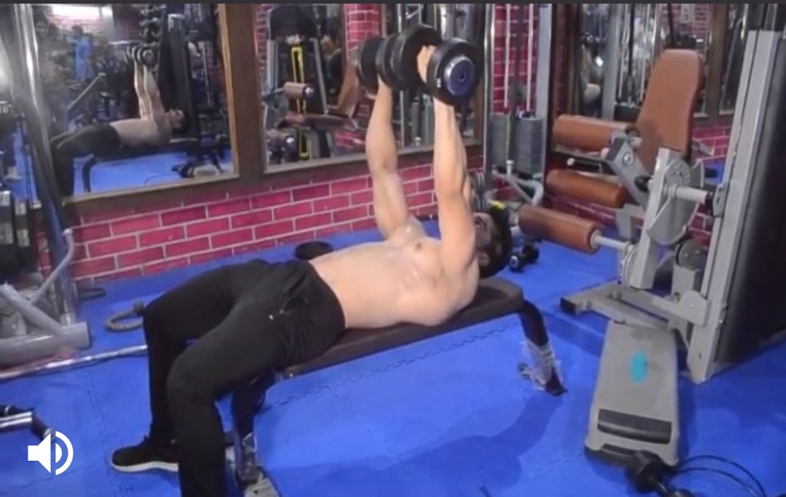

Push-Ups
Body Parts:Chest
Description:
Lie prone with your arms straight, your palms flat on the floor, and your hands shoulder-width apart (or wider).
Hold your feet together or very slightly spread: Inhale and baend your elbows to bring your torso near the floor,
avoiding extreme hyperextension of your spine:- Push yourself back to arms, extended position, exhaling as you complete the movement.
-----------------------------------------------------------------------------------------------------------------------------------------------------------------

Bench Press
Body part:Chest
Description
To properly perform a bench press exercise you need to lay flat on a bench and have your feet flat on the floor. The bar, when racked,
will be slightly behind your head. It is important to use spotter for this exercise, especially if you are using a free bar or dumbbells,
to eliminate the chance of dropping the weight on yourself. Once you have lifted the weight off the rack, the bar will be directly over the center of the chest.
Keep your head on the bench at all times throughout the movement. Once you have the bar steady, slowly it to about chest level,
focusing position, focusing on driving the bar upwards with your chest and arms.
---------------------------------------------------------------------------------------------------------------------------------------------------------------------------------------


Dumbbell Press
Body part:Chest
Description
1) Lie on the bench with a dumbbell in each hand and your feet flat on the floor. You can rest your feet up on the bench if it's more comfortable.
2) Push the dumbbells up so that your arms are directly over your shoulders and your palms are up.
3) Pull your abdominals in, and tilt your chin toward your chest.
Lower the dumbbells down and a little to the side until your elbows are slightly below your shoulders.
4) Roll your shoulder blades back and down, like you're pinching them together and accentuating your chest.
5)Push the weights back up, taking care not to lock your elbows or allow your shoulder blades to rise off the bench.
-------------------------------------------------------------------------------------------------------------------------------------------------------------------------------

Incline Dumbbell Flys
Body parts:Chest
Description
1) Grasp two dumbbells and lie on a flat bench face up. Extend your arms up with your palms facing each other,
bend your elbows slightly and keep them fixed throughout the exercise
2) Keeping your arms perpendicular to your torso slowly lower the dumbbells in a semicircular motion. Until your arms are in parallel with the floor
3) Slowly raise the dumbbells along the same arc back to the starting position.
-------------------------------------------------------------------------------------------------------------------------------------------------------------------------------------------

Mid Cable crossover
Body part:Chest
Description
1) Set up the cable machine for crossovers by adjusting the pulleys to the highest point possible on both sides and attaching single grip handles.
2) Set your desired weight on the weight stacks and grasp each handle with your palms facing down.
3) Take a step forward.
4) Bend your arms slightly at the elbows. Keep your chest up and eyes facing forwards. This is the starting position for the exercise.
5) Rotating at the shoulders only and moving your arms in a circular motion, slowly bring the handles together out in front of your body at mid-chest height.
6) Squeeze your chest as you bring the handles together.
7) Slowly lower the weight back to the starting position and repeat for desired reps.